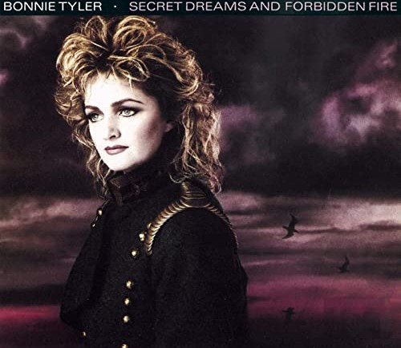

|
Where have all the good men gone and where are all the gods? Where’s the great white Hercules to fight the rising odds? Isn’t there a white knight upon a fiery steed? Late at night I toss and I turn and I dream of what I need I need a hero I’m holding out for a hero till the end of the night He’s gotta be strong and he’s gotta be fast And he’s gotta be fresh from the fight I need a hero I’m holding out for a hero till the morning light He’s gotta be sure and he’s gotta be soon And he’s gotta be larger than life Larger than life Somewhere after midnight In my wildest fantasies Somewhere just beyond my reach There’s someone reaching back for me Racing on the thunder and rising with the heat It’s gonna take a Superman to sweep me off my feet I need a hero I’m holding out for a hero till the end of the night He’s gotta be strong and he’s gotta be fast And he’s gotta be fresh from the fight I need a hero I’m holding out for a hero till the morning light He’s gotta be sure and he’s gotta be soon And he’s gotta be larger than life Larger than life Up where the mountains meet the heavens above Out where the lightning splits the sea I would swear that there’s someone somewhere watching me Through the wind and the chill and the rain And the storm and the flood I can feel his approach like a fire in my blood I need a hero I’m holding out for a hero till the end of the night He’s gotta be strong and he’s gotta be fast And he’s gotta be fresh from the fight I need a hero I’m holding out for a hero till the morning light He’s gotta be sure and he’s gotta be soon And he’s gotta be larger than life Larger than life |
Artan eşitsizlikle mücadele için harika beyaz Herkül nerede? Yanan bir atın üzerinde beyaz bir şövalye yok mu? Gece geç saatte ihtiyacım olan hayale dönerim ve tartışırım Bir kahramana ihtiyacım var. Bütün gece bir kahraman için bekliyorum O güçlü ve hızlı olmalı ve kavgadan taze olmalı Bir kahramana ihtiyacım var. Sabah ışıklarına kadar bir kahraman için bekliyorum O emin olmalı ve yakın olmalı Ve hayattan büyük olmalı Hayattan büyük Gece yarısından sonra bir yerlerde Benim vahşi fantezilerimin içinde Ulaşmamın ötesinde bir yerlerde Benim için geri gelen biri var Gök gürültüsüyle ve yükselen ateşle yarışan Ayaklarımı yerden kesecek bir Süpermen gerek. Bir kahramana ihtiyacım var. Bütün gece bir kahraman için bekliyorum O güçlü ve hızlı olmalı ve kavgadan taze olmalı Bir kahramana ihtiyacım var. Sabah ışıklarına kadar bir kahraman için bekliyorum O emin olmalı ve yakın olmalı Ve hayattan büyük olmalı Hayattan büyük Dağların gökyüzüyle buluştuğu yerde Işığın denizi yardığı bir yerde Yemin ederim bir yerlerde beni izleyen biri var Rüzgar, soğuk ve yağmur sayesinde Ve fırtına ve sel Kanımdaki ateş gibi yaklaştığını hissediyorum Bir kahramana ihtiyacım var. Bütün gece bir kahraman için bekliyorum O güçlü ve hızlı olmalı ve kavgadan taze olmalı Bir kahramana ihtiyacım var. Sabah ışıklarına kadar bir kahraman için bekliyorum O emin olmalı ve yakın olmalı Ve hayattan büyük olmalı Hayattan büyük... |
|